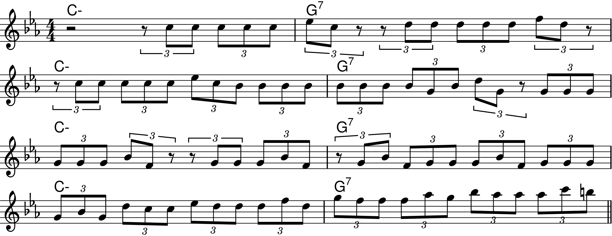
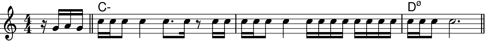
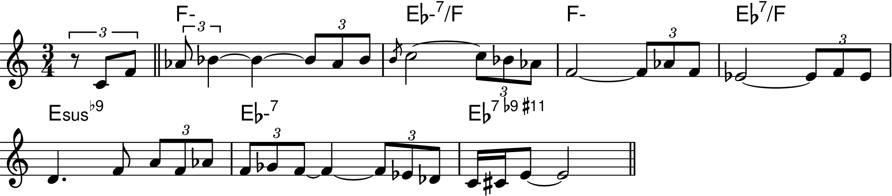
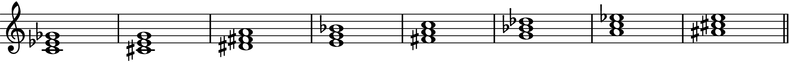

Chapter 6: From Scales to Music
Back to Top
Sequences
Figure 6-1a
Figure 6-1b
Figure 6-1c
Figure 6-2
Figure 6-3
Figure 6-4
Figure 6-5
Figure 6-6
Figure 6-7
Figure 6-8
Figure 6-9
Figure 6-10
The Continuous Scale Exercise
Figure 6-11
Figure 6-12
Figure 6-13
Figure 6-14
Figure 6-15
Figure 6-16
Figure 6-17
Figure 6-18
Figure 6-19a
Figure 6-19b
Figure 6-19c
Masters of the Sequence
Joe Henderson
Figure 6-20
Figure 6-21
Figure 6-22
Figure 6-23

Figure 6-24
Figure 6-25
Figure 6-26
Figure 6-27
Figure 6-28
Figure 6-29
Figure 6-30

Figure 6-31
Figure 6-32
Herbie Hancock
Figure 6-33
Figure 6-34
Figure 6-35
Figure 6-36
Figure 6-37
Figure 6-38
Figure 6-39

Figure 6-40
Figure 6-41

Freddie Hubbard
Figure 6-42
Figure 6-43
John Coltrane
Figure 6-44
George Coleman
Figure 6-45

Lee Morgan
Figure 6-46
Wayne Shorter
Figure 6-47
Triadic Improvisation
Figure 6-48
Figure 6-49
Figure 6-50
Figure 6-51
Figure 6-52
Practicing Triadic Patterns
Figure 6-53
Figure 6-54
Figure 6-55
Figure 6-56
Figure 6-57
Figure 6-58
Figure 6-59

Figure 6-60
Figure 6-61a
Figure 6-61b
7th Chord Sequences
Common Tones
Stretchin' the Changes